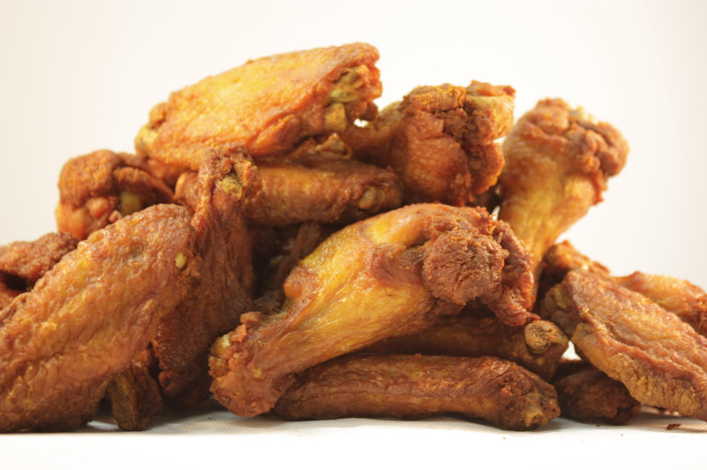

Home
Fried chicken

A Delicious fried chicken and simple to make together with your kids.
A classic recipe everyone can enjoy!
- 2 tablespoons all-purpose flour
- 2 tablespoons dry potato flakes
- 1 tablespoon seasoned salt
- 1/2 teaspoon ground black pepper
- 30 saltine crackers
- 1 egg
- 6 skinless, boneless chicken breast halves
- 2 cups vegetable oil
- Place crackers in a large resealable plastic bag; seal bag and crush crackers
with a rolling pin until they are coarse crumbs. Add thee flour, potato flakes,
seasoned salt, and pepper then mix well.
- Beat egg in a bowl. One by one, dredge chicken piecees in egg, then place
in bag with crumb mixture. Seal bag and shake to coat
- Heat oil in deep fryer or large saucepan to 175 degrees C
- Fry chicken, turning frequently, until golden brown and juices run clear,
15 to 20 minutes.